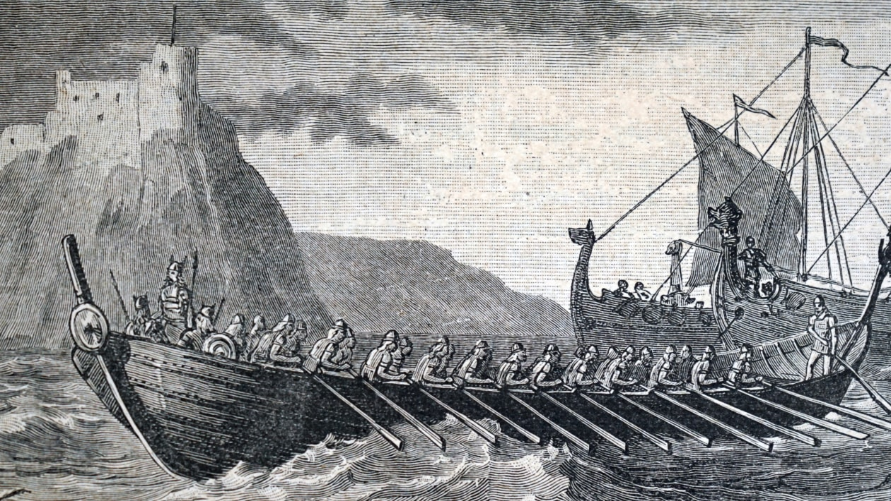
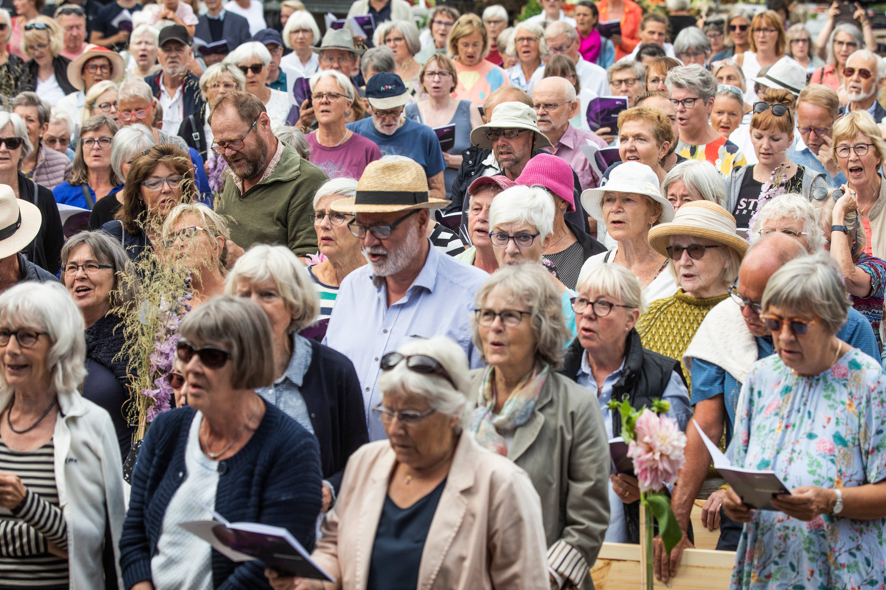

History

Denmark, country occupying the peninsula of Jutland (Jylland), which extends northward from the centre of continental western Europe,
and an archipelago of more than 400 islands to the east of the peninsula.
Jutland makes up more than two-thirds of the country’s total land area;
at its northern tip is the island of Vendsyssel-Thy (1,809 square miles [4,685 square km]),
separated from the mainland by the Lim Fjord.
The largest of the country’s islands are Zealand (Sjælland; 2,715 square miles [7,031 square km]),
Vendsyssel-Thy, and Funen (Fyn; 1,152 square miles [2,984 square km]). Along with Norway and Sweden,
Denmark is a part of the northern European region known as Scandinavia.
The country’s capital, Copenhagen (København), is located primarily on Zealand;
the second largest city, Århus, is the major urban centre of Jutland.
Though small in territory and population, Denmark has nonetheless played a notable role in European history.
In prehistoric times, Danes and other Scandinavians reconfigured European society when the Vikings undertook marauding,
trading, and colonizing expeditions. During the Middle Ages,
the Danish crown dominated northwestern Europe through the power of the Kalmar Union. In later centuries,
shaped by geographic conditions favouring maritime industries,
Denmark established trading alliances throughout northern and western Europe and beyond,
particularly with Great Britain and the United States.
Making an important contribution to world culture, Denmark also developed humane governmental institutions and cooperative,
nonviolent approaches to problem solving.
Geographical Features
Denmark is attached directly to continental Europe at Jutland’s 42-mile (68-km) boundary with Germany.
Other than this connection, all the frontiers with surrounding countries are maritime,
including that with the United Kingdom to the west across the North Sea.
Norway and Sweden lie to the north, separated from Denmark by sea lanes linking the North Sea to the Baltic Sea.
From west to east, these passages are called the Skagerrak, the Kattegat, and The Sound (Øresund).
Eastward in the Baltic Sea lies the Danish island of Bornholm.
Denmark proper is a lowland area that lies, on average, not more than 100 feet (30 metres) above sea level.
The country’s highest point, reaching only 568 feet (173 metres),
is Yding Forest Hill (Yding Skovhøj) in east-central Jutland.
The basic contours of the Danish landscape were shaped at the end of the Pleistocene Epoch
(i.e., about 2,600,000 to 11,700 years ago) by the so-called Weichsel glaciation.
This great glacial mass withdrew temporarily during several warmer interstadial periods,
but it repeatedly returned to cover the land until it retreated to the Arctic north for the last time
about 10,000 years ago. As a result, the barren layers of chalk and limestone that earlier constituted the
land surface acquired a covering of soil that built up as the Weichsel retreated, forming low, hilly, and
generally fertile moraines that diversify the otherwise flat landscape.
A scenic boundary representing the extreme limit reached by the Scandinavian and Baltic ice sheets runs
from Nissum Fjord on the western coast of Jutland eastward toward Viborg,
from there swinging sharply south down the spine of the peninsula toward Åbenrå and the German city of Flensburg,
just beyond the Danish frontier. The ice front is clearly marked in the contrast between the
flat western Jutland region, composed of sands and gravels strewn by meltwaters that poured west from the
shrinking ice sheet, and the fertile loam plains and hills of eastern and northern Denmark,
which become markedly sandier toward the prehistoric ice front.
Regions and Cities
There's a total of 5 major regions in Denmark, and they are
You can click on them ;)
Region Hovedstaden
Region Midtjylland
Region Nordjylland
Region Sjælland
Region Syddanmark
Populations

The people of Denmark are known as Danes. They are Nordic Scandinavians, many of which are blond, blue-eyed, and
tall. In the southern part of the country, some people have German ancestry.
The population of Denmark, as registered by Statistics Denmark, was 5.825 million in April 2020. Denmark has
one of the oldest populations in the world, with the average age of 41.9 years, with 0.97 males per female.
Despite a low birth rate, the population is growing at an average annual rate of 0.59% because of net
immigration and increasing longevity. The World Happiness Report frequently ranks Denmark's population as the
happiest in the world. This has been attributed to the country's highly regarded education and
health care systems, and its low level of income inequality.
Denmark is a historically homogeneous nation. However, as with its Scandinavian neighbours, Denmark has recently
transformed from a nation of net emigration, up until World War II, to a nation of net immigration. Today, residence
permits are issued mostly to immigrants from other EU countries (54% of all non-Scandinavian immigrants in 2017).
Another 31% of residence permits were study- or work-related, 4% were issued to asylum seekers and 10% to persons
who arrive as family dependants. Overall, the net migration rate in 2017 was 2.1 migrant(s)/1,000 population,
somewhat lower than the United Kingdom and the other Nordic countries.
There are no official statistics on ethnic groups, but according to 2020 figures from Statistics Denmark, 86.11%
of the population in Denmark was of Danish descent (including Faroese and Greenlandic), defined as having at least
one parent who was born in the Kingdom of Denmark and holds Danish Nationality. The remaining 13.89% were
of foreign background, defined as immigrants or descendants of recent immigrants. With the same definition, the
most common countries of origin were Turkey, Poland, Syria, Germany, Iraq, Romania, Lebanon, Pakistan, Bosnia and
Herzegovina, and Somalia.
Languages
Christianity is the dominant religion in Denmark. In January 2020, 74.3% of the population of Denmark were members of the Church of Denmark (Den Danske Folkekirke), the officially established church, which is Protestant in classification and Lutheran in orientation. The membership percentage have been in steadily decline since the 1970s, mainly as fewer newborns are being baptised into it. Only 3% of the population regularly attend Sunday services and only 19% of Danes consider religion to be an important part of their life.
Christianity is the dominant religion in Denmark. In January 2020, 74.3% of the population of Denmark were
members of the Church of Denmark (Den Danske Folkekirke), the officially established church, which is Protestant in
classification and Lutheran in orientation. The membership percentage have been in steadily decline
since the 1970s, mainly as fewer newborns are being baptised into it. Only 3% of the population regularly
attend Sunday services and only 19% of Danes consider religion to be an important part of their life.
According to a 2010 Eurobarometer Poll, 28% of Danish nationals polled responded that they "believe there is a God", 47%
responded that they "believe there is some sort of spirit or life force" and 24% responded that they "do not believe there
is any sort of spirit, God or life force". Another poll, carried out in 2009, found that 25% of Danes believe Jesus is the
son of God, and 18% believe he is the saviour of the world.
Climate
Denmark has a temperate climate, characterised by mild winters, with mean temperatures in January of 1.5 °C, and
cool summers, with a mean temperature in August of 17.2 °C. The most extreme temperatures recorded in
Denmark, since 1874 when recordings began, was 36.4 °C in 1975 and −31.2 °C in 1982. Denmark has an
average of 179 days per year with precipitation, on average receiving a total of 765 millimetres per year; autumn
is the wettest season and spring the driest. The position between a continent and an ocean means that the
weather is often unstable.
Because of Denmark's northern location, there are large seasonal variations in daylight. There are short days
during the winter with sunrise coming around 8:45 am and sunset 3:45 pm (standard time), as well as long summer
days with sunrise at 4:30 am and sunset at 10 pm (daylight saving time).
Ecology
Denmark belongs to the Boreal Kingdom and can be subdivided into two ecoregions: the Atlantic mixed forests and Baltic
mixed forests. Almost all of Denmark's primeval temperate forests have been destroyed or fragmented,
chiefly for agricultural purposes during the last millennia. The deforestation has created large swaths of
heathland and devastating sand drifts. In spite of this, there are several larger second growth woodlands in
the country and, in total, 12.9% of the land is now forested. Norway spruce is the most widespread tree (2017);
an important tree in the Christmas tree production. Denmark holds a Forest Landscape Integrity Index mean score of
0.5/10, ranking it 171st globally out of 172 countries—behind only San Marino.
Roe deer occupy the countryside in growing numbers, and large-antlered red deer can be found in the sparse woodlands of Jutland. Denmark is also home to smaller mammals, such as polecats, hares and hedgehogs.[68] Approximately 400 bird species inhabit Denmark and about 160 of those breed in the country.[69] Large marine mammals include healthy populations of Harbour porpoise, growing numbers of pinnipeds and occasional visits of large whales, including blue whales and orcas. Cod, herring and plaice are abundant culinary fish in Danish waters and form the basis for a large fishing industry.[70]